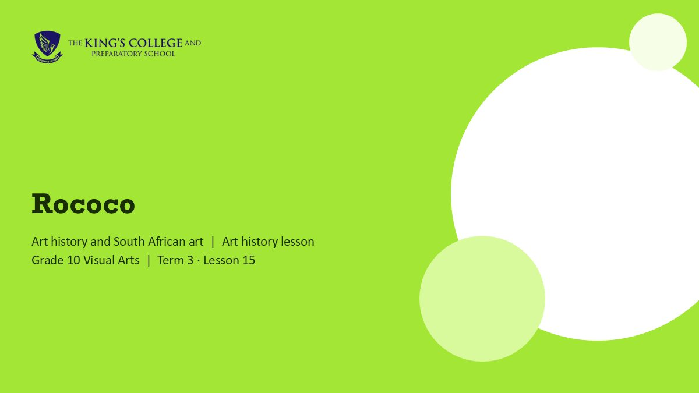

Term 3 · Lesson 15 · Art history lesson
Rococo
Start Here
Today I Will
- Explain how Rococo developed from the Baroque
- Describe the work of Watteau, Boucher and Fragonard
- Compare a Baroque and a Rococo painting
Think first
Is a painting less important just because it is pretty and pleasant to look at?
Words to Know
| Word | Meaning |
|---|---|
| Rococo | The light, decorative style of the 1700s (c. 1715 – c. 1780), from the French rocaille. |
| Rocaille | Shell- and rock-like decoration used in garden grottoes. |
| Fête galante | A painting of elegant people enjoying music and conversation outdoors. |
| Pastel palette | Soft, pale colours mixed with white, such as pink, sky blue and mint green. |
| Ornament | Decoration added to a surface, such as curling gilded scrolls and shells. |
| Neoclassicism | The serious, classical style that replaced Rococo in the late 1700s. |
Slides

Videos
Notes
From Baroque grandeur to Rococo charm: Watteau, Boucher and Fragonard; ornament and the aristocracy.
From Versailles to the Paris Townhouse
- The change: After Louis XIV died in 1715, nobles moved from the formal court at Versailles to elegant townhouses (hôtels) in Paris.
- Interiors: White and pastel panelling, curling gilded ornament, mirrors and delicate paintings, as in the Amalienburg (1734 – 1739).
- Watteau (1684 – 1721): Invented the fête galante. Pilgrimage to the Island of Cythera (1717) carries a gentle sadness as the day fades.
- Boucher (1703 – 1770): A favourite of Madame de Pompadour; decorative mythological scenes in pinks and blues.
- Fragonard (1732 – 1806): Lively, feathery brushwork. The Swing (1767) is a playful garden scene full of symbols of love.
Baroque Grandeur Versus Rococo Charm
| Baroque | Rococo |
|---|---|
| Grand, heavy, serious; for churches and royal halls. | Small-scale, light and intimate; for private rooms. |
| Deep contrasts of light and dark; rich, strong colour. | Pastel colours: pink, sky blue, mint green and cream. |
| Strong diagonals and dramatic moments of faith or power. | Asymmetrical S- and C-curves, shells and plant forms. |
| Subjects meant to move viewers to faith or awe. | Light-hearted subjects: love, leisure, music and outings. |
| Church and royal patrons. | Aristocratic patrons and private collectors. |
Remember
The Baroque wanted to move you; Rococo wanted to charm you.
Practical
You need: History booklet, visual journal, both images on screen
Rubens Versus Fragonard
- Head two columns: Rubens, The Elevation of the Cross (1610 – 1611) and Fragonard, The Swing (1767).
- Describe each: subject, setting and mood in one or two sentences.
- Compare colour, line and direction using identify, describe, effect.
- Compare the purpose: who was each painting made for and where was it meant to be seen?
- Opinion: answer the hook question in a short paragraph with two reasons from your comparison.
Test Yourself
- Where does the word Rococo probably come from?
- Identify three differences between Baroque and Rococo art.
- Explain why Rococo fell out of favour.
Show answers
1. From rocaille, the shell and rock decoration of garden grottoes. 2. Any three: scale, colour, curves versus diagonals, subject, patrons, mood. 3. Critics and Enlightenment thinkers called it shallow and immoral, and after the French Revolution (1789) the serious Neoclassical style replaced it.
Finished Early?
C- and S-curve ornament
Design a Rococo frame in your VJ.
- Draw a small oval or rectangle as a picture frame.
- Decorate it with asymmetrical C- and S-curves and a shell shape.
- Colour it in pastel pink, sky blue and cream, with touches of gold.
- Write one way it differs from Baroque grandeur.